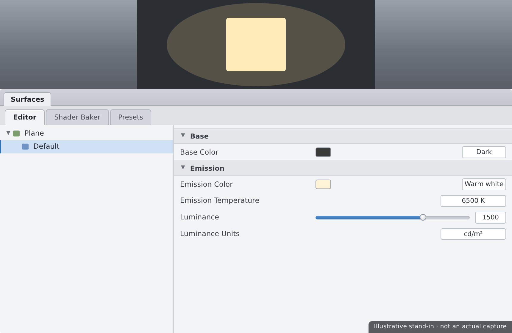
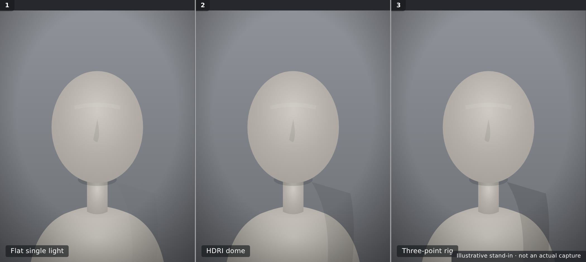

💡 Lesson 3.2: Lighting for Iray
Lighting is where a render stops looking like a 3D model and starts looking like a photograph. Iray is a physically based engine — it treats light the way a real camera does, which means the same tools that light a photo studio light your scene. In this lesson you'll meet the four ways to put light into an Iray scene — HDRI domes, emissive surfaces, and point and spot lights — then arrange them into a classic three-point setup and finish with the tone mapping that controls exposure and mood. Master this and every render you make from here on will have depth, direction, and intent.
🎯 Learning Objectives
By the end of this lesson, you will be able to:
- Explain why Iray lighting is physically based and what that means for you
- Light a scene with an HDRI environment dome
- Turn any object into a light using emissive surfaces
- Place and aim photometric point and spot lights
- Build a classic three-point lighting setup in Daz
- Use tone mapping — exposure, ISO, shutter, and f-stop — to control brightness and mood
- Choose the right lighting approach for a given shot
Estimated Time: 60 minutes
Project: Your staged scene from Lesson 3.1, now lit with a deliberate setup — a dome or three-point rig, exposure dialed in — ready for a final Iray render in Lesson 3.3.
In This Lesson
Why Lighting Matters
You've staged a scene and framed a camera, but with only the placeholder dome it still looks flat and grey. Lighting is the fix — and in Iray, lighting is physically based, meaning the renderer simulates how real light travels, bounces, and falls off. The upshot: photographic intuition works here. Light that would flatter a real face flatters this one too.
💡 The one-sentence version: Iray simulates real light physics, so lighting a scene is much like lighting a photo studio — direction, softness, and intensity create form, mood, and realism.
📖 Definition
Physically based rendering (PBR): a rendering approach that models light using real-world physical rules — energy conservation, inverse-square falloff, real reflectance. Because the math mirrors reality, materials and lights behave predictably and consistently across different scenes.
Iray gives you four ways to add light. Each has a job, and most good renders combine two or three of them.
💡 Real units mean real behavior
Iray lights use photometric units (lumens, kelvin for color temperature) and fall off with the inverse-square law — double the distance, a quarter of the light. That's why a light feels dramatic up close and gentle far away. Thinking in real-world terms will steer you right far more often than guessing.
⚠️ Important Note: Everything here assumes the Iray render engine and that the headlamp is off (Lesson 3.1). If your careful lighting looks washed out, a still-on headlamp is the usual culprit — turn it to Never in Render Settings before you judge any setup.
The HDRI Environment Dome
The fastest way to great-looking light is an HDRI loaded into the environment dome. A single 360° image wraps the whole scene and lights it with realistic, directional, colored light captured from a real place — all in one step.
📖 Definition
HDRI (High Dynamic Range Image): a 360° photograph that stores a huge range of brightness — from deep shadow to the blazing sun. Applied to Iray's environment dome, it both lights the scene (bright spots act like light sources) and can serve as the background behind the figure.
You set the dome in Render Settings → Environment. Two choices drive it:
| Setting | What It Does | Notes |
|---|---|---|
| Environment Mode | Dome, Dome-and-Scene, Sun-Sky Only, or Scene Only | Use Dome or Dome-and-Scene to light with an HDRI |
| Environment Map | The HDRI image loaded into the dome | Point it at a .hdr / .exr file |
| Environment Intensity | How bright the dome lights the scene | Your main brightness dial for dome lighting |
| Dome Rotation | Spins the HDRI around the scene | Rotate to aim the brightest part where you want key light |
✅ Pro Tip — rotate the dome to place your key light
An HDRI's sun or brightest window is effectively your key light. Instead of adding a separate light, rotate the dome so that bright spot falls where you want the strongest light on the face. It's the quickest way to get flattering directional light for free.
⚠️ Important Note: If you don't want the HDRI visible as a background but still want its light, set the environment so the dome is drawn as light only (or use a backdrop/backplane in front of it). That way you keep the beautiful lighting without the photographic background showing behind your subject.
Point & Spot Lights
For precise control you add photometric lights — the same point, spot, and distant lights a studio photographer uses. Create them from Create → New Light… (or the light presets in the menu), then position and aim them like any node.
📖 Definition
Photometric light: a light defined in real-world units (lumens, kelvin). Iray offers three core types — Point (radiates in all directions, like a bare bulb), Spot (a directed cone you can aim), and Distant (parallel rays from infinitely far, like the sun).
The three light types at a glance
| Type | Behavior | Reach for it when… |
|---|---|---|
| Point | Radiates equally in all directions from a spot | Lamps, bulbs, general fill |
| Spot | A focused, aimable cone with adjustable spread | Key lights, stage effects, controlled pools of light |
| Distant | Parallel rays, even everywhere, direction-only | Sunlight, moonlight, broad even light |
💡 Bigger lights make softer shadows
A light's size controls shadow softness: a small light gives hard, crisp shadows; a large one gives soft, gradual shadows. Photographers enlarge a light with a softbox — in Iray you just raise the light's geometry size. For flattering portraits, go bigger and softer.
✅ Pro Tip — point a spot with its target
Aiming a spot light by rotating it is fiddly. Instead, give it a point-at target (or use the light's built-in aim) so it always looks at your figure's head — then you can move the light freely and it keeps pointing where it should.
⚠️ Important Note: Iray uses real intensity units, so a new light can look shockingly bright or dim until you set it in context. Adjust the light's Lumens and your camera's exposure together — brightness is a duet between the light and the tone mapping (covered below), not the light alone.
Emissive Surfaces
Any surface can become a light. An emissive surface glows and casts real light into the scene — perfect for screens, neon signs, glowing panels, and the soft studio look of a large glowing plane standing in for a softbox.
📖 Definition
Emissive surface (mesh light): a surface whose Iray Uber Emission property is turned on, so the mesh itself emits light. Because the light comes from actual geometry, it's inherently an area light — large emissive planes give beautifully soft, wrapping illumination.
You already met Emission back in the Uber shader (Lesson 2.3). To make a mesh light: select a surface, set its Emission Color to something other than black, and dial Luminance for brightness. A simple primitive plane makes an excellent DIY softbox.
💡 Emissives are soft by nature
Because an emissive plane is a big area light, its shadows are soft and its light wraps gently around the subject — flattering for skin. The trade-off is render time: area lights add noise that takes more samples to clean up. It's usually worth it for the quality.

⚠️ Important Note: Emissive brightness is set by Luminance with a chosen unit (e.g. cd/m²). The same number means very different brightness under different units, so if a glowing plane blows out or barely registers, check the Luminance unit before endlessly tweaking the number.
Three-Point Lighting
The most reliable portrait recipe in the world is three-point lighting: a key, a fill, and a rim. It's a century-old studio and film standard, and it works exactly the same in Daz because Iray light behaves like real light.
📖 Definition
Three-point lighting: a setup using three roles — a key (the main, brightest light setting the mood), a fill (a softer light softening the key's shadows), and a rim/back light (behind the subject, separating them from the background with a bright edge).
The three roles
- Key — your main light, off to one side and slightly above; it defines the primary shadows and the mood. Brightest of the three.
- Fill — opposite the key, softer and dimmer; it lifts the shadows so they're not pure black. A large emissive or a bounce works well here.
- Rim (back/hair light) — behind and above the subject, aimed at the back of the head; it draws a bright outline that pops the figure off the background.
✅ Pro Tip — set the key first, alone
Build the setup one light at a time. Turn on only the key and get it looking good, then add the fill, then the rim — judging each addition on its own. Trying to balance three lights all glowing at once is how beginners end up with a flat, over-lit mess.
⚠️ Important Note: You can mix methods freely — an HDRI dome makes a lovely fill while a spot serves as the key, or an emissive plane is the key while a distant light is the rim. Three-point is a recipe of roles, not specific light types; assign the role to whatever tool gives the look you want.
Tone Mapping & Exposure
Here's the part that surprises newcomers: in Iray, your camera controls brightness as much as your lights do. Iray's tone mapping gives every camera photographic exposure controls — ISO, shutter speed, and f-stop — so you set exposure exactly like a real photographer.
📖 Definition
Tone mapping: the process of converting Iray's huge internal range of light values into the limited range a screen or image can show. Its controls live on the camera (and in Render Settings) as Exposure Value (EV), or the individual ISO, Shutter Speed, and F-Stop.
The exposure trio
| Control | Photographic meaning | Effect on the render |
|---|---|---|
| ISO | Sensor sensitivity | Higher = brighter image |
| Shutter Speed | How long the sensor is exposed | Slower shutter = more light = brighter |
| F-Stop | Aperture size | Lower f-number = brighter (and shallower depth of field) |
💡 Fix overall brightness with exposure, not the lights
If a whole render is too dark or too bright but the balance between lights looks right, don't touch the lights — adjust the camera's Exposure Value. Lower EV brightens, higher EV darkens. This keeps your carefully balanced key/fill/rim ratios intact while fixing overall level.
⚠️ Important Note: Tone-mapping settings are per camera. Two cameras in the same scene can render at different exposures, which is great for variety but confusing if you forget — a shot that's suddenly too dark may just be a different camera's exposure, not a lighting change.
Choosing an Approach
With four lighting tools and a recipe, which do you use? It depends on the shot. Here's a quick decision guide to keep you from over-thinking it.
| You want… | Reach for… | Why |
|---|---|---|
| Fast, realistic light with a background | HDRI dome | One image lights and backgrounds the whole scene |
| Full control of a portrait | Three-point rig | Key/fill/rim shapes the face deliberately |
| Soft, flattering studio skin | Emissive planes | Large area lights wrap gently and softly |
| A specific practical (lamp, screen, neon) | Point light or emissive | Motivated light that matches an object in frame |
💡 The best setups combine methods
Real renders rarely use one tool alone. A common, reliable combo: an HDRI dome for ambient realism and fill, plus one spot or emissive key to shape the face, and maybe a rim for separation. Start simple, add only what the shot needs.
⚠️ Important Note: More lights is not better lighting. Each added light multiplies decisions and render time, and competing lights flatten a scene just like the headlamp does. If a render looks muddy, try removing a light rather than adding one — restraint reads as intent.

Hands-on: Light a Portrait
Let's light the scene you staged in Lesson 3.1 — first the quick way with an HDRI, then the controlled way with a three-point rig, and finish by dialing exposure.
🏋️ Exercise 1: HDRI Dome
Objective: Get flattering light in under a minute.
Steps:
- In Render Settings → Environment, set Environment Mode to Dome-and-Scene and load an HDRI into the Environment Map.
- Adjust Environment Intensity until the scene is well-lit, then rotate the dome so the brightest part lights the face from a flattering angle.
- Do a quick render or Iray preview and note how directional and realistic it already looks.
🏋️ Exercise 2: Three-Point Rig
Objective: Build a controlled portrait setup one light at a time.
Steps:
- Add a spot light as your key, off to one side and slightly above; aim it at the head and get it looking good alone.
- Add a softer, dimmer fill opposite the key (an emissive plane or a large spot) to lift the shadows.
- Add a rim light behind and above the subject, aimed at the back of the head, to separate them from the background.
💡 Hint — my scene renders almost black or blown out
That's exposure, not necessarily your lights. Open the camera's tone mapping and adjust the Exposure Value — lower to brighten, raise to darken. Also confirm the headlamp is off and that light Lumens are in a sane range. Balance the lights to each other first, then fix overall level with EV.
🏋️ Exercise 3: Dial Exposure & Save
Objective: Finish the look with tone mapping and preserve it.
Steps:
- With the balance right, set overall brightness using the camera's Exposure Value (or ISO/shutter/f-stop).
- Nudge the white balance / color temperature if the mood wants to be warmer or cooler.
- Save your scene — a lit, exposed setup is exactly what Lesson 3.3 turns into a finished, denoised render.
🎯 Quick Quiz
Question 1: What does an HDRI applied to the environment dome do?
Question 2: In a three-point setup, what is the rim (back) light's job?
Question 3: Your render's light balance looks right, but the whole image is too dark. Best fix?
Best Practices
✅ Do's
- Turn the headlamp off before judging any lighting setup.
- Start with an HDRI for fast, realistic light, then add lights only as needed.
- Build three-point rigs one light at a time, key first.
- Use large or emissive lights for soft, flattering shadows on skin.
- Set overall brightness with camera exposure, not by cranking every light.
- Think in real-world terms — direction, size, and distance behave like real light.
❌ Don'ts
- Don't over-light — competing lights flatten a scene as badly as the headlamp.
- Don't balance all lights at once — you'll lose track of what each one does.
- Don't ignore the Luminance unit on emissives before tweaking numbers.
- Don't forget exposure is per-camera — a dark shot may be the wrong camera's EV.
- Don't judge lighting in the OpenGL preview — use an Iray preview or render.
💡 Pro Tips
- Rotate the HDRI dome to place its brightest spot as your key light.
- Give spot lights a point-at target so they track the head as you move them.
- Make a big emissive plane your softbox for gorgeous, soft studio skin.
- Use color temperature (kelvin) to set warm indoor or cool daylight mood.
- When a render looks muddy, remove a light before adding one.
Summary
🎉 Key Takeaways
- Iray is physically based, so photographic lighting intuition — direction, size, distance, inverse-square falloff — works directly in Daz.
- An HDRI environment dome lights and backgrounds a scene from one 360° image; rotate it to aim its brightest region as your key.
- Point, spot, and distant lights give precise control, and emissive surfaces turn geometry into soft area lights.
- Three-point lighting — key, fill, rim — is a recipe of roles you can fill with any light type; build it one light at a time.
- Tone mapping puts ISO, shutter, f-stop, and Exposure Value on the camera — set overall brightness there to preserve your light balance.
📚 Additional Resources
- Render Settings & Environment — official Daz user guide
- Iray Uber shader (Emission) — Daz documentation
- About Iray in Daz Studio
🚀 What's Next?
Your scene is staged and beautifully lit — now it's time to make the final image. In Lesson 3.3 — Rendering with Iray, we open Render Settings for real: samples and convergence, the denoiser, spot-rendering, render canvases, and saving and lightly post-processing a finished picture worth showing off.
💡 You can light now!
Dome, spots, emissives, three-point, and exposure — you've got the whole photographer's toolkit working inside Daz. Lighting is the single biggest lever on how professional a render looks, and you just learned to pull it. One more lesson and you'll have a finished, framed, lit, rendered image.